+ Реконструкция (эпизоды 1, 2, 3) Субтитры: Русские и Английские | 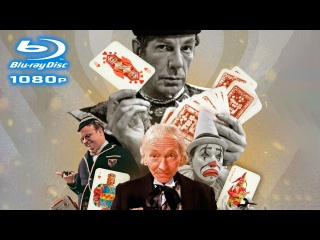 |
|---|---|
+ Фанатская CGI анимация (эпизоды 1, 2, 3) WhoRecons Субтитры: отсутствуют | 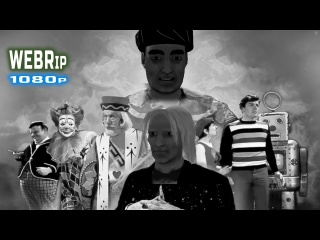 |
+ Черно-белая анимация в соотношении сторон 4:3 (эпизоды 1, 2, 3) Субтитры: Русские и Английские | 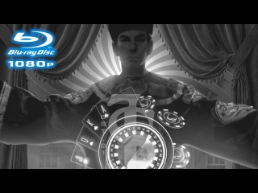 |
Субтитры: Русские и Английские | 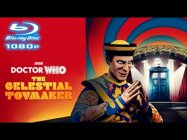 |
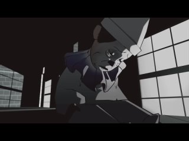 эп.1‑1 - Небесная комната игрушек (dinopuff) | 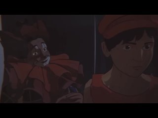 эп.1‑2 - Небесная комната игрушек (dinopuff) |
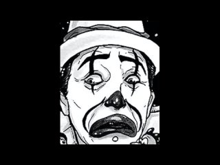
| 1. Небесная комната игрушек 2. Кукольный зал 3. Танцпол 4. Последнее испытание | Все эпизоды утеряны * 4-й эпизод найден в 1984 г. - 16mm t/r * На утраченные эпизоды имеется: - Реконструкция * Имеется официальная ч/б и цветная анимация на все эпизоды |
|---|
| |
«Небесный игрушечник» заманивает Доктора, Стивена и Додо в мир, где реальность — это игра: могущественный Игрушечник заставляет их проходить смертельно опасные испытания. Доктор сражается в интеллектуальной дуэли с хозяином этого мира, а его спутники преодолевают ловушки с клоунами, ожившими картами и коварными играми. Серия балансирует между детской эстетикой и настоящей угрозой, показывая, как хрупка свобода, когда ею распоряжается чужой каприз. Финал строится на парадоксе: чтобы разрушить иллюзию, нужно не победить, а переиграть саму суть игры — и Доктор находит этот выход, спасая друзей и ускользая из ловушки.
 VHS (4эп.) - 1991 |  DVD (4эп.) 1 ноября 2004 |
|---|---|
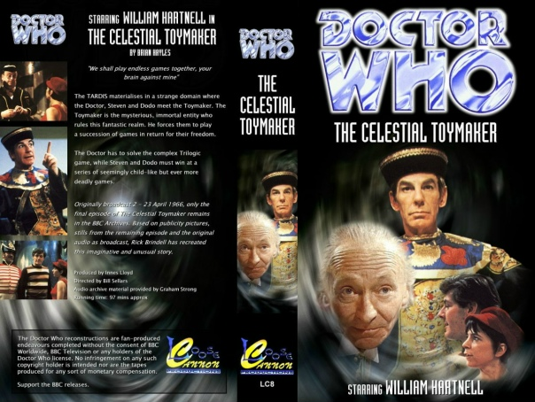 LC recon | 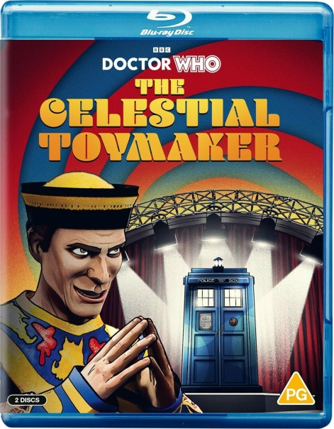 Blu-ray (Анимация) - 11 июня 2024 * Версия в нашей группе |
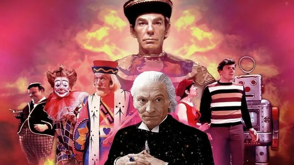
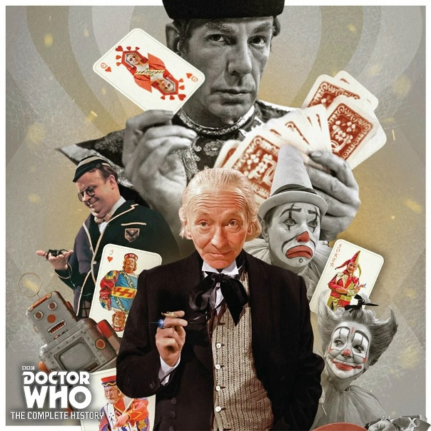
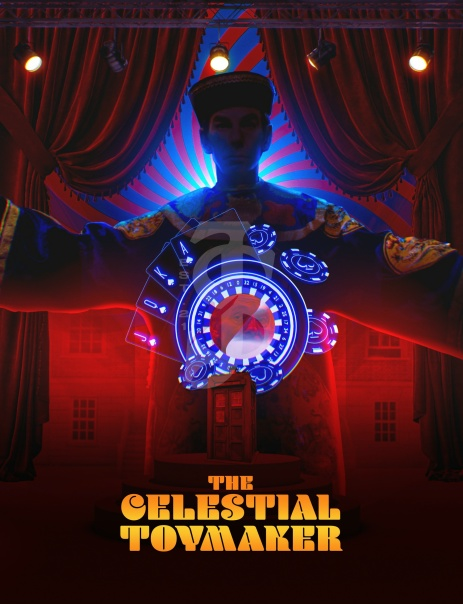